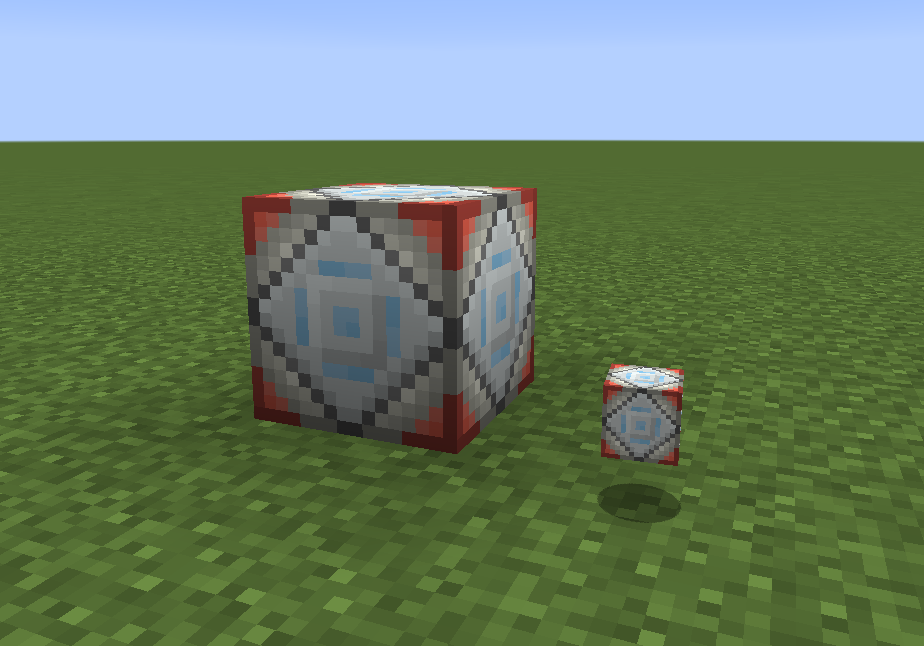

Warp Pad¶
The Warp Pad is a block which consumes Forge Energy to teleport mobs that step on it to a linked location. The amount of energy stored, and the energy cost to teleport can be configured via the warpPadMaxEnergy and warpPadCostFunction options in pokecube_adventures-common.toml, or energy cost can be entirely disabled via warpPadEnergy. Individual Warp Pads may also have their energy cost disabled via NBT Editing.
Linking to a destination¶
The Warp Pad is linked to a destination using the Location Linker, It should not be linked to another Warp Pad! Right clicking the Warp Pad with the linker will link it to the stored location.
Linking to Siphon¶
To create a remote link to an Energy Siphon, the location where you are about to place the Warp Pad must first be selected with a Location Linker. This generally means the following steps:
Place a dirt block where you want to place the Warp Pad
Use the linker on the dirt block
Replace the dirt block with the Warp Pad
Link the Energy Siphon to the location stored in the linker